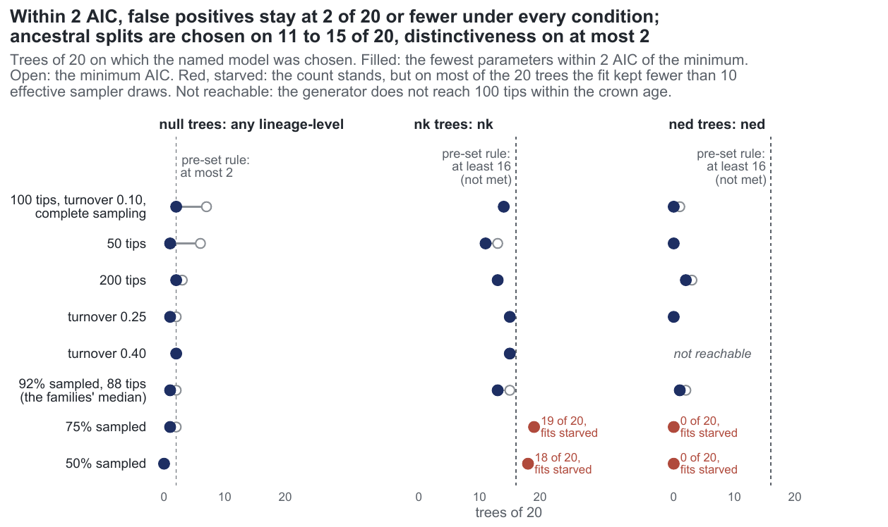
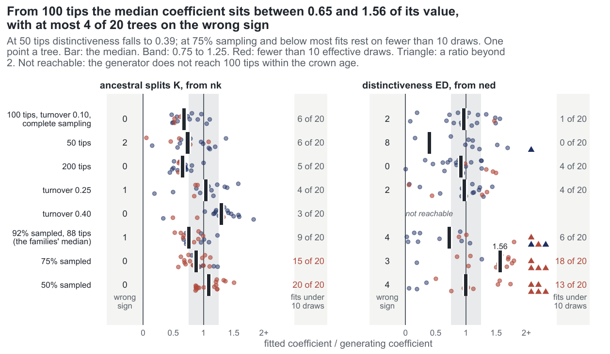

E27 — How does the one-call ladder behave at other sizes, turnovers and sampling fractions?
| Status | complete: 460 ladders, 23 of 24 generator x cell pairs (ned at turnover 0.40 not calibrated). The ned rung is clock-limited in every cell and the nk rung in six of eight; r75 and r50 are sampler-limited for both lineage-level generators |
| Package build | emphasis 3e596dd (the build of E26) |
| Driver / analysis | sim/E27-conditions.R, sim/E27-analysis.R; figures sim/figures-study.R |
| Data | results/E27/cells.csv (per cell and generator), ladder.csv (2300 rows), trees.csv, calibration.csv, calibration-table.csv; results/E27-t40/ (the amendment); tables report/e27-table.tex, e27-numbers.tex |
Question
Seven of the ten models had their recovery measured at one point only: about 100 tips, turnover 0.10, complete sampling. E23 measured the ladder there and at 200 tips, on 10 and 6 trees a generator. The 47 families of E26 run from 50 to 194 tips (median 88) at sampling fractions 0.65 to 1 (median 0.92), so most were fitted under conditions no simulation had visited. E27 moves one condition at a time away from the reference point and runs the ladder at each, to calibrate E26 as it was run.
Design
| cell | target tips | turnover at \(N = 0\) | \(\rho\) | clock per fit |
|---|---|---|---|---|
ref |
100 | 0.10 | 1 | 30 min |
n50 |
50 | 0.10 | 1 | 30 min |
n200 |
200 | 0.10 | 1 | 120 min |
t25 |
100 | 0.25 | 1 | 30 min |
t40 |
100 | 0.40 | 1 | 30 min |
r75 |
100 | 0.10 | 0.75 | 30 min |
r50 |
100 | 0.10 | 0.50 | 30 min |
fam |
88 | 0.10 | 0.92 | 30 min |
| Parameter | Value | Meaning |
|---|---|---|
| generators | dd (null), ned at \(\log 0.65\) per scale unit of ED, nk at \(-\log 0.65\) per scale unit of \(K\) |
exponential link, crown age 15 |
| generating coefficients | \(\beta_{ED}\) -0.084 to -0.128 per unit by cell; \(\beta_K\) +0.130 to +0.181 per split | calibration-table.csv |
| calibration | capacity per cell and generator so that the median observed tree has the target size; 40 surviving clades per capacity, 80 for the chosen one | scale units read per cell from complete dd clades |
| sampling | clade simulated complete, each extant species kept with probability \(\rho\) | clade larger by \(1/\rho\) |
| acceptance | observed size within 0.6-1.6 of the target | |
| trees | 20 a generator and cell | 480 designed |
| fit | estimate_rates(phy, model = "all", link = "exponential") at the cell's \(\rho\): cr → dd → {nd, ned, nk}, nested starts, auto_bounds() boxes |
|
draws / max_iter |
300 / 100 | E23's and E26's budget, held fixed |
The 200-tip cell has the longer clock because E23's 60 minutes ended 21 of 30 nd and ned rungs there before their cap.
Amendment 2026-10-05 (t40/nk). The nk generator at turnover 0.40 sat at a median of 128 tips at the smallest capacity the search allowed (0.3 of the target clade), a limit of the search and not of the model. The search was rerun for that pair with its lower end at 0.05 of the target clade (--k-lo 0.05, results/E27-t40/): capacity 29.4, median 113 tips, \(\beta_K\) 0.130 per split (the first search gave capacity 30.1, median 127.5 tips, \(\beta_K\) 0.136). Its 20 trees were fitted under E27's budget and enter the table as the t40/nk row; the rows of results/E27/ladder.csv for that pair are the amended run's. ned at turnover 0.40 reaches a median of 28 tips at the largest capacity tried (2490) and is not fitted (rule d).
Pre-set rule
Per cell: (a) on dd trees the winner is dd on \(\ge 80\%\) and a lineage-level model on \(\le 10\%\); (b) on ned and nk trees the winner is the generator on \(\ge 80\%\), and the fitted coefficient of the generator's covariate has median \(\hat\beta/\beta \in [0.75, 1.25]\) and the right sign on \(\ge 80\%\); (c) a cell and generator whose generator fit has a median effective sample below 10 is reported, marked sampler-limited and left out of the selection statement; (d) a pair the calibration cannot bring to the target size is reported and not fitted. A condition changes a rate when the cell differs from ref by at least 6 trees of 20. No family is added to or removed from E26's counts on E27's account; each count is restated beside the false-positive rate of the nearest cell.
Results
Selection, counts of 20, read as the fewest parameters within 2 AIC (parsimony) / at the minimum AIC:
| cell | dd trees: dd chosen |
lineage-level on dd trees |
rule (a) | ned trees: ned chosen |
ned trees go to (pars.) cr/dd/nd/ned/nk |
nk trees: nk chosen |
nk trees go to (pars.) cr/dd/nd/ned/nk |
|---|---|---|---|---|---|---|---|
ref |
16 / 13 | 2 / 7 | met | 0 / 1 | 4/16/0/0/0 | 14 / 14 | 0/4/0/2/14 |
fam |
17 / 16 | 1 / 2 | met | 1 / 2 | 6/13/0/1/0 | 13 / 15 | 1/3/1/2/13 |
r75 |
15 / 15 | 1 / 2 | not met (15) | 0 / 0 (s-l) | 4/16/0/0/0 | 19 / 19 (s-l) | 0/1/0/0/19 |
r50 |
16 / 19 | 0 / 0 | met | 0 / 0 (s-l) | 10/10/0/0/0 | 18 / 18 (s-l) | 0/2/0/0/18 |
t25 |
8 / 11 | 1 / 2 | not met (cr on 11) |
0 / 0 | 16/4/0/0/0 | 15 / 15 | 0/4/0/1/15 |
t40 |
6 / 9 | 2 / 2 | not met (cr on 12) |
not calibrated | — | 15 / 15 | 1/2/0/2/15 |
n50 |
14 / 11 | 1 / 6 | not met (14) | 0 / 0 | 4/16/0/0/0 | 11 / 13 | 0/8/0/1/11 |
n200 |
16 / 16 | 2 / 3 | met | 2 / 3 | 6/9/1/2/2 | 13 / 13 | 0/1/0/6/13 |
Recovery of the generator's coefficient (ratio median and quartiles, right sign of 20, median ESS of 300, fits below 10, stops of the generator rung conv / cap / clock):
| cell | ned: ratio |
sign | ESS | < 10 | stops | nk: ratio |
sign | ESS | < 10 | stops |
|---|---|---|---|---|---|---|---|---|---|---|
ref |
0.97 (0.72-1.23) | 18 | 221 | 1 | 1 / 0 / 19 | 0.68 (0.55-0.78) | 20 | 19.9 | 6 | 2 / 7 / 11 |
fam |
0.72 (0.04-1.25) | 16 | 35 | 6 | 0 / 0 / 20 | 0.76 (0.67-0.96) | 19 | 13.7 | 9 | 1 / 6 / 13 |
r75 |
1.56 (0.99-1.77) | 17 | 2.9 | 18 | 0 / 0 / 20 | 0.88 (0.74-1.01) | 20 | 5.9 | 15 | 0 / 4 / 16 |
r50 |
1.00 (0.16-1.83) | 16 | 3.4 | 13 | 0 / 0 / 20 | 1.08 (0.88-1.22) | 20 | 2.2 | 20 | 0 / 0 / 20 |
t25 |
0.98 (0.39-1.22) | 18 | 50 | 4 | 1 / 1 / 18 | 1.04 (0.88-1.14) | 19 | 24.4 | 4 | 1 / 9 / 10 |
t40 |
— | 1.30 (1.18-1.42) | 20 | 30.8 | 3 | 1 / 19 / 0 | ||||
n50 |
0.39 (-0.52-1.11) | 12 | 167 | 0 | 6 / 5 / 9 | 0.74 (0.54-1.02) | 18 | 39.5 | 6 | 3 / 15 / 2 |
n200 |
0.91 (0.69-1.25) | 20 | 106 | 4 | 1 / 1 / 18 | 0.65 (0.58-0.71) | 20 | 19.2 | 5 | 0 / 11 / 9 |
The ned rung reached a median of 3 (r50) to 63 (n50) of its 100 iterations. By the clock rule added after E31 (clock ended > 10% of the generator's fits) the ned rung is clock-limited in all seven calibrated cells and the nk rung in all but t40 and n50. r75 and r50 are sampler-limited for both lineage-level generators (cells.csv nonetheless marks rule_b TRUE for nk there; by rule (c) those cells are left out). On null trees the dd fit returns \(\beta_N\) at 0.83-1.05 of its value in every cell but t25 (0.45) and t40 (-0.08, right sign on 9 of 20).
A ladder took a median 75-88 minutes at 50 tips, 115-156 at 100 and 414-440 at 200 tips with 24 workers sharing 16 cores; the t40/nk ladders, on a second host, took a median 55.

nk reaches 11-15 of its own trees where its fits keep their draws and ned at most 2, against the 16 the rule asks.
ned comes back at 0.91-0.98 at 100-200 tips and complete sampling, 0.39 at 50 tips; nk at 0.65-0.76 at 50-200 tips and 1.30 at turnover 0.40.Conclusion
Rule (a) is met at ref, fam, r50 and n200 and not at r75 (15 of 20), n50 (14), t25 (8) and t40 (6); the lineage-level ceiling holds in every cell under the parsimonious reading (0-2 of 20) and fails at ref and n50 at the minimum (7 and 6). Rule (b): the selection half is met nowhere (ned at most 2 of 20, nk 11-15 in the six cells read). The recovery half is met for ned at ref, t25 and n200 and for nk at fam and t25; not for nk at ref, n50, n200 (0.65-0.74) or t40 (1.30), nor for ned at fam (0.72) and n50 (0.39). Rule (d): ned at turnover 0.40 not fitted.
Across cells, by the registered threshold of 6 trees of 20 from ref (parsimony counts): turnover 0.25 and 0.40 move the null trees from dd to cr (dd 16 → 8 and 6); turnover 0.25 and 50% sampling move the ned trees from dd to cr (cr 4 → 16 and 10). No condition changes the nk count by 6 or more (11-19 against 14). ned is estimable and not selectable under every condition; nk is chosen on most of its trees and below the 0.80 line. Every rate rests on fits mostly stopped by the clock at 100 iterations, so selection counts are floors; E29 and E31 refit the 200-tip cell with 300 iterations.
Related
- E23 — the ladder at 100 and 200 tips, 10 and 6 trees a generator.
- E26 — the 47 families E27 calibrates; E28 refits the 29 inside E27's range.
- E29 — the
nedcell at 200 tips with 300 iterations (on trees drawn underf30a791, not E27's). - E31 — the pendant-edge pair at 200 tips, reusing E27's null trees.
- E35 — an extinction driver at 200 tips and turnover 0.25 through E27's driver.